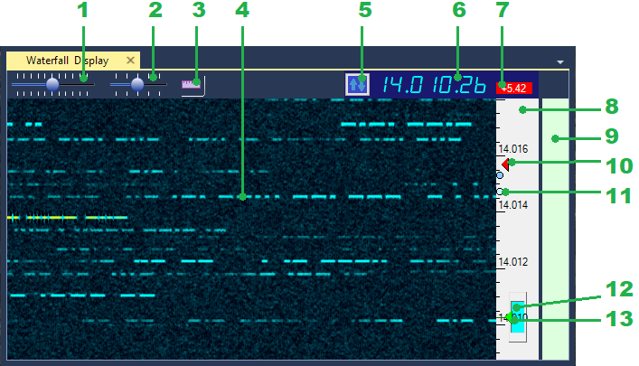

Waterfall Display Plugin
Purpose
This is a visual plugin that shows the waterfall display and a band map, and provides a number of commands to control the RX and TX frequencies and filter settings. The primary purpose of this plugin is to provide the means for visual navigation in the Ham bands.
Settings
Scale Background Color, Scale Foreground Color
Use these settings to change the colors of the frequency scale. The colors of the band map may be configured in the Band Plan plugin settings.
Controls

- Zoom slider. Controls the vertical zoom of the waterfall.
- Speed slider. Controls the horizontal speed of the waterfall.
- Relative Scale button. Switches between the absolute frequencies and frequency offsets on the frequency scale 8.
- Signal trace.
- Left-click to tune the receiver at the signal.
- Right-click to enable the Split mode and set the transmit frequency.
- Ctrl-click to set a frequency mark (11).
- Tune Button. Used for paging the waterfall display up and down,
switching between the band plan segments and changing the bands.- Left-click - tune page up
- Right-click - tune page down
- Alt-Left-click - next band segment
- Alt-Right-click - previous band segment
- Ctrl-Left-click - band up
- Ctrl-Right-click - band down.
- Frequency Display. Shows the current dial frequency.
- Left-click - jump to the band start (mode dependent).
- Right-click - enter the new dial frequency manually.
- Split offset display. Shows the transmitter offset
in the Split mode. Red color indicates that Split is enabled.
- Left-click to toggle Split On/Off
- Right-click to reset the Split offset to zero.
- Frequency scale. Shows either the absolute frequencies
or frequency offsets, depending on the state of the button 3.
- Drag up and down to pan the waterfall vertically without changing the dial frequency.
- Left-click to set the dial frequency
- Right-click to enable the Split mode and set the transmit frequency.
- Ctrl-click to set a frequency mark (11).
- Band Map. Shows the band segments using the data provided by the Band Plan plugin. Move the mouse cursor to see band plan information on the mouse tooltip.
- Transmit frequency indicator. Visible only when the Split mode is enabled.
- Frequency mark. Ctrl-click on the waterfall (4) or band map (10) to place a frequency mark. Up to 4 marks are available. Useful for tracking the listening pattern of a DX station.
- Bandpass filter. Represents the bandpass filter in the Bandpass Filter plugin. The blue rectangle shows the extent of the filter passband. Drag with the mouse to change the filter bandwidth. In the SSB mode the upper and lower cutoff frequencies are adjusted independently, in CW only the filter bandwidth may be adjusted.
- Dial frequency indicator. Left-click on the waterfall (4) or band map (10) to change the frequency.
Example
The video below was recorded with the IC-7610 I/Q plugin as signal source. It shows how to zoom and pan the waterfall, adjust filter passband and navigate the band using the mouse and dial knob.